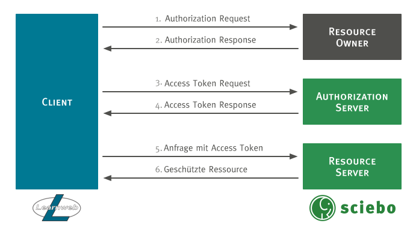

sciebo@Learnweb
Diese Website dokumentiert die Integration von sciebo in das Learnweb von dem Projektseminar sciebo@Learnweb, das im Wintersemester 2016/17 an der Westfälischen Wilhelms-Universität Münster stattgefunden hat.
Sciebo ist ein Cloud-Dienst, der gemeinsam von 26 Hochschulen und Forschungseinrichtungen in NRW angeboten wird. Als Grundlage dient die Enterprise-Edition von ownCloud. Das Learnweb ist ein auf der Open-Source-Lösung Moodle basierendes E-Learning System der Westfälischen Wilhelms-Universität Münster.
Eine mögliche Lösung sollte dabei möglichst allgemein einsetzbar sein, da die Kombination von Moodle und ownCloud an zahlreichen Universitäten genutzt wird.
Allgemeine Motivation für die Arbeit
Die grundsätzliche Motivation für das Projektseminar war es, die beiden Systeme sciebo und Learnweb passwortlos miteinander kommunizieren zu lassen. Bedeutet, dass einmalig ein Passwort eingegeben werden muss, welches aber nicht im Klartext auf dem jeweils anderen System gespeichert wird. Der Zugriff sollte also über ein tokenbasiertes Authentifizierungsverfahren wie zum Beispiel OAuth 2.0 ablaufen. Dadurch sollte es unter Anderem ermöglicht werden, dass Dateien aus Sciebo im Learnweb abgerufen werden können und kollaborative Ordner in sciebo vom Learnweb aus erstellt werden können.
Integrationsszenarien (User Stories)
Als Integrationsszenarien der Systeme wurden verschiedene User Stories entwickelt. Diese haben wir nach Schwierigkeit, Interesse, Benutzbarkeit und Implementationsaufwand priorisiert. Als Integrationsrichtung konzentrierte wir uns auf die Richtung Learnweb sciebo.
Realisierte Szenarien
1. Als Nutzer möchte ich OAuth2 benutzen können, um mich im Learnweb als Sciebo Nutzer anzumelden.
Dieser Use Case implementiert die grundlegende Authentifizierung mit dem OAuth 2.0 Verfahren. Im Rahmen unserer Vorbereiungsphase auf das Projektseminar haben wir verschiedene Authentifizierungsmethoden evaluiert. Im Abschnitt Authentifizierung und Autorisierung finden sie hierfür genauere Informationen. Hierfür ist in Moodle das Admin Tool implementiert worden. Es übernimmt sämtliche Aufgaben der Authentifizierung. Alle anderen Plugins nutzen dieses Tool. In OwnCloud wurde hierfür eine App entwickelt.
2. Als Nutzer möchte ich in der Dateiauswahl im Learnweb eine Datei aus meiner sciebo Instanz hochladen.
Der vorherige Use Case war für den Benutzer der Moodle Instanz noch nicht sichtbar. Das wichtigste Anwendungsszenario ist das Nutzer im Learnweb Dateien aus ihrer Sciebo Account hochladen können. Hierfür haben wir in Moodle ein Repository-Plugins entwickelt. Sobald das Reposiotory einer Moodle Instanz hinzugefügt wurde kann der Nutzer über einen anmelde Button Moodle autorisieren Dateien aus dem privaten sciebo account anzuzeigen und mit Hilfe des File Pickers können nun Dateien ausgewählt werden.
3. Als Nutzer möchte ich in der Dateiauswahl im Learnweb eine Datei aus meiner sciebo Instanz verlinken.
Eine Erweiterung des vorherigen Szenarios ist die Verlinkung von Dateien. Hier wird zu der bestehenden Datei ein public-link erstellt. Dieser kann nun von Nutzern angeklickt werden. Diese Funktionalität ist auch Teil des Repository-Plugins. Das Verlinken ist jedoch nur in der Aktivität URL verfügbar.
4. Als Lehrender möchte ich Studierenden oder Gruppen von Studierenden Ordner für kollaboratives Arbeiten bereitstellen.
Die letzte User Story die wir implementiert haben, wurde vermehrt von Lehrenden der Universität Münster nachgefragt. Ein Lehrender kann mir Hilfe der Aktivität collaborativefolders in einem Kurs Ordner erstellen auf den Studierende Zugriff haben und den sie ihrem sciebo account hinzufügen können.
Weitere User Storys die jedoch nicht im Rahmen diese Projektseminars implementiert werden konnten finden sie unter dem Abschnitt Weitere Anwendungsszenarien.
Authentifizierung und Autorisierung
Grundlegend für die Integration beider Systeme ist die Authentifizierung und Autorisierung. Unter den gängigen Verfahren, die untersucht wurden, befinden sich:
- OAuth 2.0
- JSON Web Tokens
- Federated Single Sign-on mit beispielsweise Shibboleth
Für das Projekt wurde das OAuth 2.0 Verfahren ausgewählt, da mit ihm ein standardisiertes Verfahren zur tokenbasierten Authentifizierung und Autorisierung vorliegt, das sich gut in bestehende Applikationen auf Basis vieler verschiedener Programmiersprachen einfügen lässt und damit keine weiteren Anforderungen an die Infrastruktur stellt.
OAuth 2.0
Der allgemeine OAuth 2.0 Protokollablauf ist in der nachfolgenden Abbildung dargestellt.

Zunächst muss sich der Client (Learnweb), der im Namen des Resource Owners (sciebo Nutzer) auf eine geschützte Ressource auf dem Resource Server (sciebo) zugreifen möchte, bei dem Authorization Server (sciebo) registrieren. Danach werden nach dem Protokoll folgende Schritte durchlaufen:
- Authorization Request: Der Client fordert eine Autorisierung vom Resource Owner an.
- Authorization Response: Der Client erhält eine Autorisierungsgenehmigung vom Resource Owner. Die Autorisierung kann über eine der vier Autorisierungsgenehmigungen (authorization grant type) erfolgen, oder es wird ein erweiterer Genehmigungsprozess verwendet.
- Access Token Request: Der Client fordert ein Access Token vom Authorization Server an. Hierfür nutzt er die Autorisierungsgenehmigung vom Resource Owner.
- Access Token Response: Der Authorization Server authentifiziert den Client und prüft die Autorisierungsgenehmigung. Ist die Prüfung erfolgreich, wird ein Access Token ausgestellt.
- Anfrage mittels Access Token: Der Client fragt die geschützten Daten beim Resource Server an. Zur Authentifizierung benutzt er den Access Token.
- Zugriff auf geschützte Ressourcen: Der Resource Server prüft den Access Token und stellt, wenn gültig, die gewünschten Daten zur Verfügung.
Komponenten
ownCloud
Die Komponenten, die wir benötigen um eine Lösung anzubieten, sind die von uns implementierte oauth2 App und der ownCloud Core mit Änderungen aus unserem Pull request, damit die oauth2 App die volle Funktionalität bereitstellen kann. Die oauth2 App implementiert den OAuth 2.0 Prozessfluss. Sie agiert als Endpunkt für die Authorisierung und die Bereitstellung von Access Tokens und Refresh Tokens. Die App ist also das Mittel zur Verbindung von Resource Owner, Authorization Server und auch Resource Server mit dem Client.
Moodle
Zusammenspiel
Weitere Anwendungsszenarien
Im Rahmen unseres Projektseminars haben wir uns auf die für uns wichtigsten UseCases konzentriert. Im Folgenden werden weitere Use Cases erläutert über deren Implementierung wir nachgedacht haben und die eine Erweiterung zu den bestehenden Use Cases bilden könnten.
-
Als Lehrender möchte ich auf einen Button klicken, um hochgeladene Dateien zu aktualisieren.
-
Als Studierender möchte ich Dateien aus dem Learnweb direkt in meiner sciebo Instanz speichern können.
-
Als Studierender möchte ich anderen Studierenden Schreib- und Lese-Rechte geben um kollaborativ zu arbeiten.
-
Als Lehrender möchte ich Nutzern auf Modul-Basis das Recht entziehen eine Datei zu verlinken.
-
Als Nutzer möchte ich in der Dateiauswahl im Learnweb einen Ordner aus meiner sciebo Instanz hochladen.
-
Als Lehrender möchte ich in der Dateiauswahl im Learnweb einen Ordner aus meiner sciebo Instanz verlinken.
-
Als Studierender möchte ich Lehrenden Schreib- oder Lese-Rechte auf mein Dokument geben können um Feedback zu erhalten.
-
Als Lehrender möchte ich die Möglichkeit haben, einen Zielordner in Sciebo zur Speicherung auszuwählen, um Abgaben herunterzuladen.
-
Als Lehrender möchte ich sciebo als primären Speicher für alle Dateien im Kurs verwenden können.
-
Als Lehrender möchte ich in Sciebo die Teilen-Funktion nutzen, um Dateien oder Dokumente für Kursteilnehmer freigeben zu können.